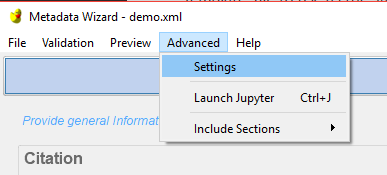
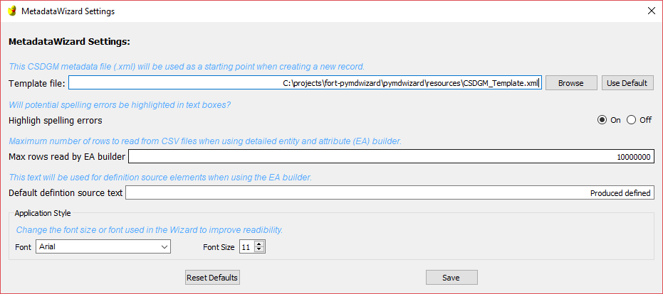

Changing the Template
When an individual, project, or organization has particular metadata content needs that are expected in every record, it can be inefficient to populate these every time a record is started. To allow users to prepopulate these fields easily the MetadataWizard allows for users to specify a ‘Template’ file to use as the starting point for any new records.
This template is simply an FGDC record that contains default content. Keep in mind that anything specified in the template can be overwritten individually when editing a new record, they are just the default values that will pre-populate elements in the application.
The default template record used by the Metadata Wizard is part of the standard installation but can be changed to suit the particular needs of individuals or organizations.
Open the Metadata Wizard and create a new record, saved to a location where it will not be overwritten or inaccessible.
Edit this record in the Metadata Wizard to contain the content needed in subsequent new records. Sections to consider customizing might include some or all of:
Dataset Point of Contact
Metadata Contact
Metadata Standard Name
Distribution Information
ISO 19115 Keywords
Place Keywords
Bounding Coordinates
Attribute Accuracy Report
Logical Accuracy Report
Completeness Report
Positional Accuracy
Save this record.
In the top menu bar click Advanced -> settings to open the settings form, and browse to the XML temple file saved above.


The selected template will remain active after closing and reopening the application.
If at any time you want to return to the default template that comes with the wizard just click the ‘Use Default’ button on the settings form.